Objectives:
Setting up Splunk server to analyze events
Learning the basics of Active Directory
Attacking the AD to see what kind of telemetry it produces
Project setup overview:
· Active Directory Server (with Splunk Universal Forwarder and Sysmon installed)
· Windows workstation (with Splunk Universal Forwarder and Sysmon installed)
· Splunk Server
· Kali Linux machine for attacking the AD
· All the machines are in the same NAT network so that they can have internet access and can communicate with each other
To accomplish this I followed tutorials and documentations
Setting up the environment in VirtualBox
- Configuring Splunk Server
First I edited the 00-installer-config.yaml file — the only file in /etc/netplan directory
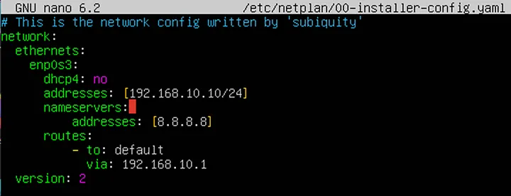
I disabled dhcp and assigned a static IP address of 192.168.10.10 as my AD network is 192.168.10.0/24. Then I set up a DNS server to google’s server 8.8.8.8 and route to default via the gateway in the AD network. I applied the changes with the command
sudo netplan apply
To install splunk I copied the installation file to the machine and run the command
sudo dpkg -i <splunk.deb file>
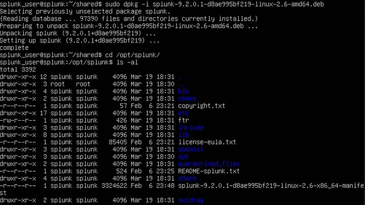
As the files are owned by user ‘splunk’ I changed into it and from the bin directory ran ./splunk start
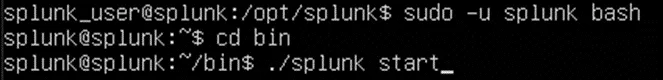
To ensure that splunk starts on boot (as user ‘splunk’) I ran the command
sudo ./splunk enable boot-start -user splunk
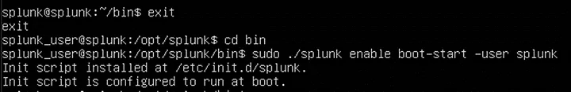
- Installing Splunk Universal Forwarder and Sysmon on both Windows machines (the domain controller and workstation)
First I downloaded the universal forwarder from the splunk website directly on my server and ran the installer. I left the ‘Deployment Server’ empty and put the IP of my splunk server as ‘Receiving Indexer’
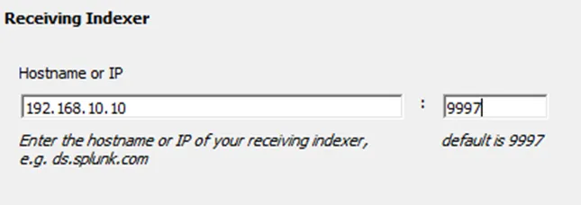
Next up I installed sysmon with config from https://github.com/olafhartong/sysmon-modular
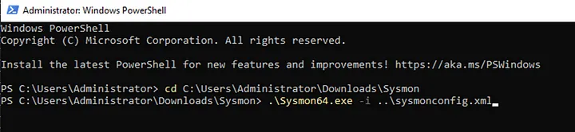
Then I addded inputs.conf to SplunkUniversalForwarder\etc\system\local to specify what kind of data will be send over to the server
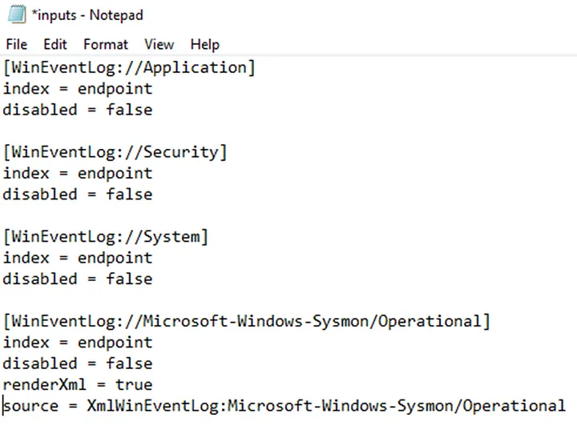
I changed the ’log on as’ option of the SplunkForwarder service to avoid problems with permissions
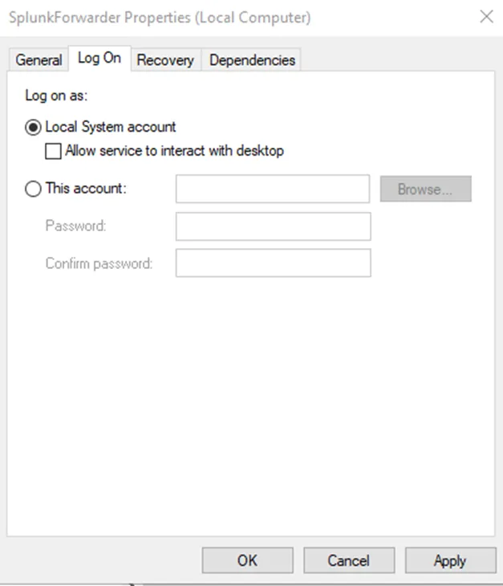
After that I accessed my splunk server on port 8000 and went to ‘Settings -> Indexes’ to create the index declared in my inputs.conf file (endpoint)
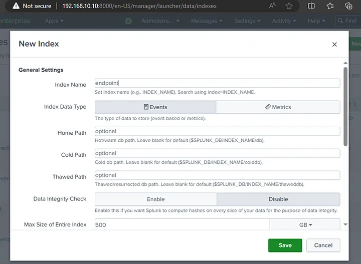
Then in ‘Settings -> Forwarding and receiving -> Configure receiving’ I added new receiving port — the one declared during installation — 9997
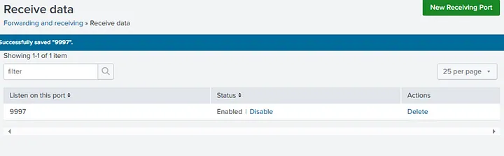
To verify if I set it up correctly I searched index=“endpoint” and got some events with the host of DC-01 which is the name of my Windows server
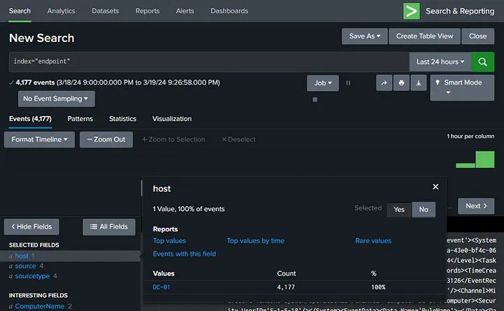
I repeated the same process on the Workstation machine and at the end verified whether I received data from both hosts
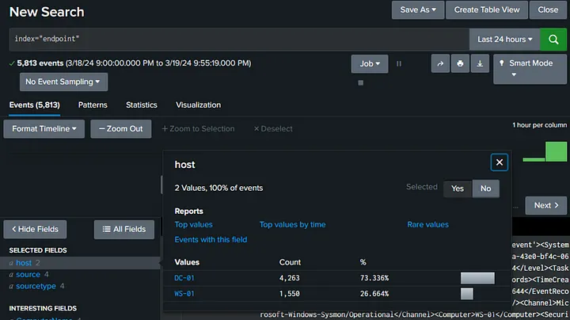